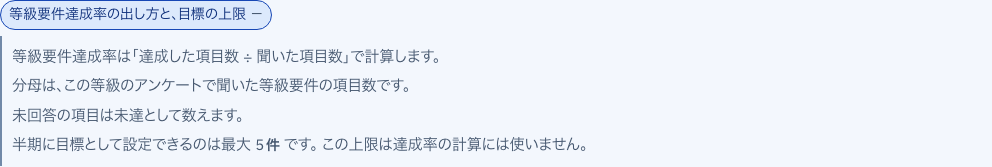

画面の詳細 ・ 押すと出るもの ・ マネージャーと評価の確定（4/4）
押すと出るもの ・ 評価の基準
S42 評価の基準 で、ボタンや見出しを押すと出る小窓・一覧・説明と、その中身。
人事評価システムの説明書
画面の中の名前と値は例です
26
達成率の出し方
開いて見る
S42 評価の基準 ・ 押すもの: 「等級要件達成率の出し方と、目標の上限」

中に出るもの
達成した項目数 ÷ 聞いた項目数
未回答は未達
半期の目標の上限は達成率に使わない